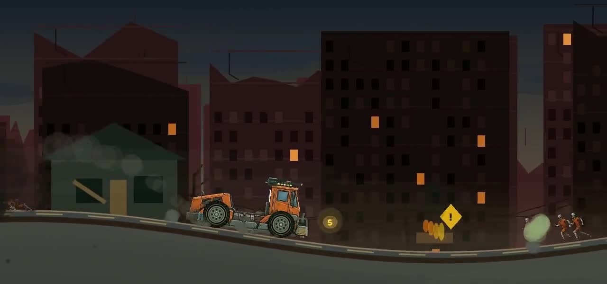
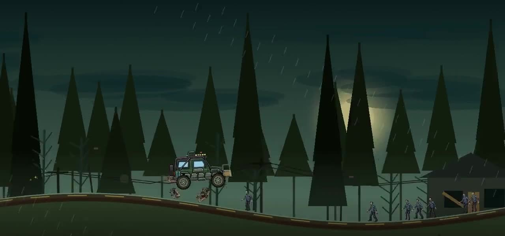
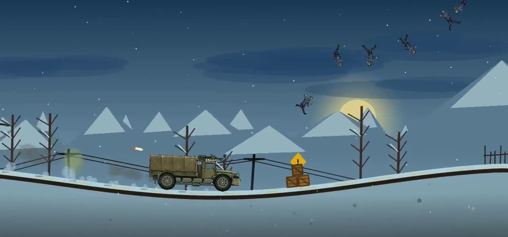

01 / URBAN RUINSNothing here
A tank of fuel. A machine built to survive.
And a whole world standing in your way.
01 / THE GAME
The apocalypse doesn't
come with a detour.
Dead Miles is a side-scrolling driving game where the road is as dangerous as the infected. Turn an old ride into a rolling weapon, keep moving through the wreckage, and make every mile count.
02 / NO SAFE ROADS
Ruined streets. Dead forests. Frozen highways.
Find a way through all eight routes.



Armor that takes the hit. Turrets that keep firing.
Rockets that clear the road.
03 / YOUR NEXT RUN
The same apocalypse.
At your desk or in your hands.
Version 0.5.2 · x64 installer · 9.2 MB
Version 0.5.2 · APK package · 13.3 MB
Direct downloads. No launcher. No account.
Check the installation & safety notes before installing.
04 / THE IMPORTANT STUFF
Clear downloads. Clear information.
Here's what to know before you play.
This website does not use analytics, advertising cookies, sign-up forms, or tracking pixels. It does not ask you for personal information.
The hosting provider may process basic request data, such as IP addresses and access logs, to serve and protect the website.
Dead Miles can be played without an account or an internet connection. Game progress and settings are saved locally on your device.
Back up important saves before removing the game or changing devices. Uninstalling may remove local progress.
The YouTube button opens the video you were linked to in a new tab. YouTube has its own privacy policy and may use cookies.
No YouTube player, advertising script, or third-party font is embedded on this website.
INSTALLATION & SAFETY
These are the version 0.5.2 builds for Windows and Android. Keep your device's security protections enabled, and only install files you trust.
Download SHA-256 checksumsKEEP THE ENGINE RUNNING
Watch the video. Follow the journey.